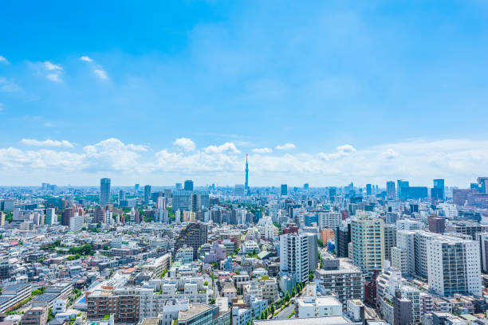
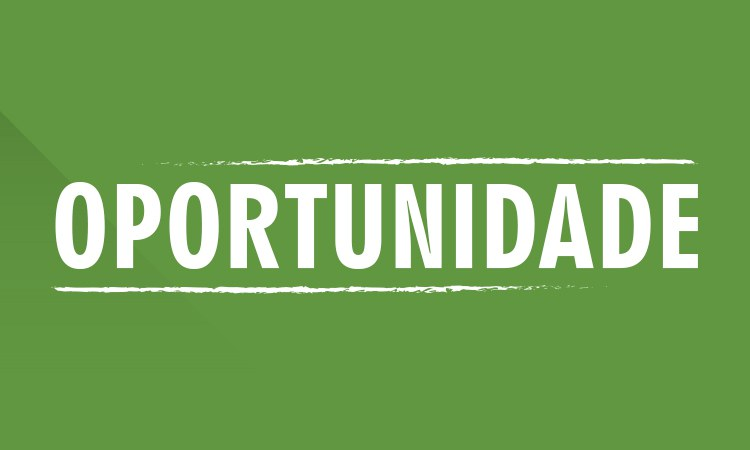

Aspectos do Campo

No campo, encontramos um estilo de vida muito bonito, as pessoas se comprimentam, olham nos olhos umas das outras :
- Relação com a Natureza: A vida rural está fortemente conectada com o ambiente natural, as crianças brincam na Natureza, com animais de verdade, esse é um ponto muito positivo, porque atualmente as crianças da cidade mau se diventem da forma correta.
- Economia Local: A economia é muitas vezes baseada em agricultura e produção local, com entrega para empresas locais com produtos rurais de otima qualidade.
Aspectos da Cidade
Em contraste, as cidades oferecem um ambiente dinâmico e diversificado. Os aspectos principais incluem:
- Oportunidades de trabalho: com fábicas, mercados, feiras, as cidades estam precisando de trabalhadores com esperiência com máquinas, com a tecnologia avan.
- Infraestrutura Avançada: Com serviços modernos e uma rede de transporte eficiente, as cidades facilitam a vida cotidiana e o acesso a recursos.
- Cultura e Entretenimento: A vida urbana é rica em opções culturais, incluindo teatros, museus e uma variedade de opções de entretenimento.
Transição e Oportunidades
A transição do campo para a cidade pode ser um desafio, mas também apresenta oportunidades únicas:
- Adaptação e Crescimento: Mudanças no ambiente e estilo de vida podem promover crescimento pessoal e novas habilidades.
- Novas Perspectivas: A experiência de viver em diferentes ambientes pode enriquecer a perspectiva de vida e a compreensão cultural.
- Oportunidades de Networking: A vida na cidade oferece oportunidades para expandir redes profissionais e sociais.